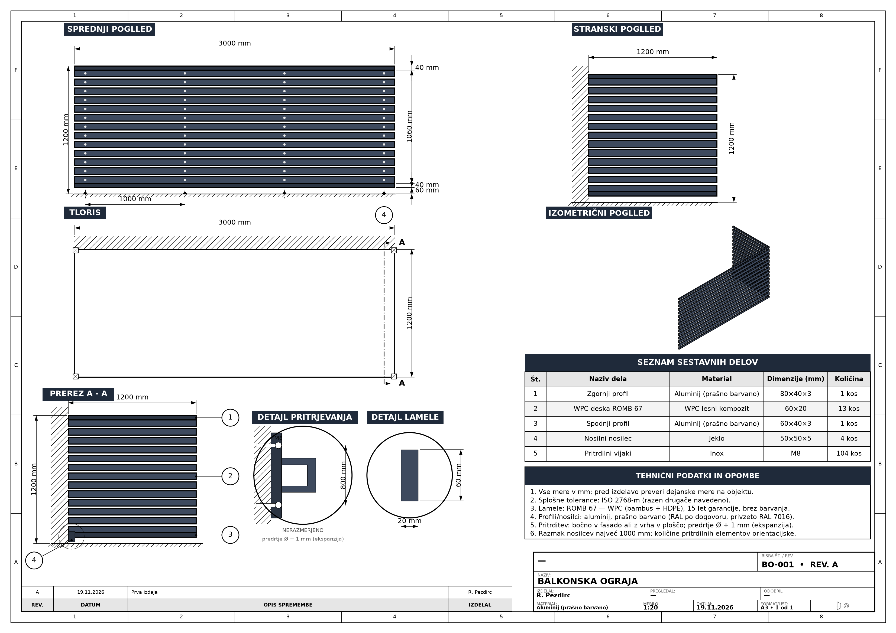
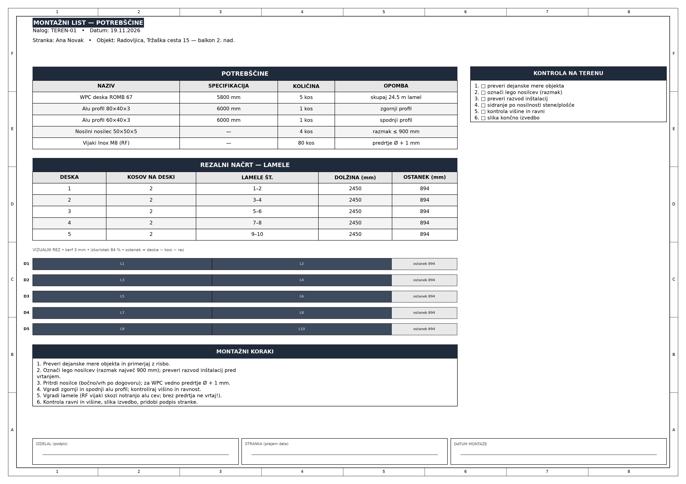

Predogled izhoda


Kaj program naredi
Tehnična risba A3
Sprednji/stranski pogled, tloris z rezom A–A, prerez, detajl pritrjevanja, detajl deske/lamele, izometrični pogled ali fotografija izvedbe — vse z kotirnimi črtami.
ISO obrazec
Conatna mreža po ISO 5457, glava po ISO 7200 (izdelal/pregledal/odobril, naročnik, objekt), tabela revizij, simbol projekcije, tolerance ISO 2768-m.
Montažni list
Potrebščine, rezalni načrt z ostanki (kerf 3 mm), vizualni rez z izkoristkom, montažni koraki s sklici na detajle, kontrola terena, podpis stranke.
Samodejni izračuni
Lega in količina nosilcev oz. stebrov, št. vijakov (2 na priključek), št. tovarniških desk/palic, odpad in izkoristek — vse iz istega geometrijskega izračuna.
Predračun (neobvezno)
Vpišeš cene (EUR/m, EUR/kos, delo) — program doda orientacijski predračun brez DDV.
Dve predlogi
Prečna ograja (lamele vodoravno na profile) in pokončna ograja (stebri + navpične deske z ročajem in osnovami).
Kako deluje
1. Namestitev
Python 3.9+ in:
python -m pip install matplotlib pyyaml pillow opencv-python2. Zagon
python vmesnik.pyali iz konfiguracije:
python risba.py projekt.yaml
3. Izhod
PDF A3 (2–3 strani: risba + montažni list + predračun) + PNG predogled. Nastavitve se samodejno shranijo.
Predloga konfiguracije
ime: BALKONSKA OGRAJA
risba_st: BO-001
izdelal: R. Pezdirc
stranka: Ana Novak
objekt: Radovljica, Tržaška 15
mere:
sirina: 2450 # dolžina ograje (mm)
visina: 950 # višina od tal do vrha (mm)
odcep: 50 # spodnji profil nad tlemi (mm)
lamele: 10 # število lamel
lamela_v: 60 # višina lamel (mm)
razmak_nosilcev: 900 # največji razmak nosilcev (mm)
barva: "Antracit" # barva lamel
profil: ROMB 67 # model deske (WoodCore)
foto: poslikava.jpg # neobvezno — slika izvedbeKje dobiti program
Koda je odprtokodna objava na GitHubu — kloniraj ali prenesi ZIP:
GitHub — tehnicna-risba